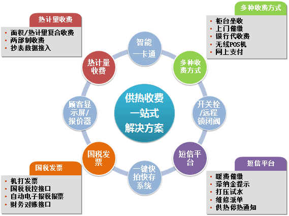
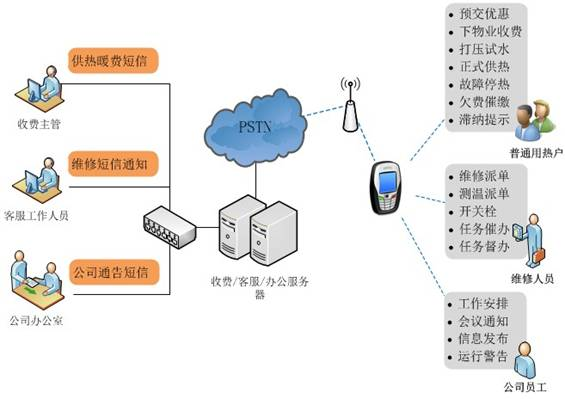
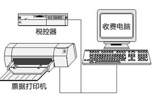
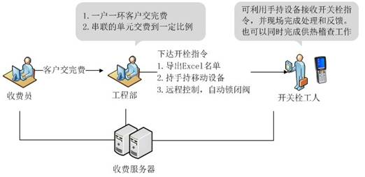

为供热企业提供量身打造了整套供热收费管理手段。

支持多种收费方式，用户可以选择适当的方式完成缴纳暖费。
1) 柜台坐收
供热企业供热收费大厅，在收费大厅里搭建互联网或者局域网，为收费员设置坐收电脑和票据打印机，可完成一个客户的暖费查询、收费、打票工作。每天收费结束，整理发票并从系统打印收费日报和财务完成交接。
2) 银行代收
借助先进的银行代收系统，提升收费工作的效率和资金安全性。如柜台现金收费、批量托收、ATM自助终端、网上银行、电话银行等24小时收费方式。收费软件提供指定收费区段的自动对账功能。
3) 无线/有线POS机收费
申请银行和银联的收费POS机，可在收费大厅或上门收费时让客户刷卡交费，减少客户带现金的不便，收费软件提供指定收费区段的自动对账功能。
4) 上门收费
在收费一段时间后，对于需要欠费催缴的客户，通过打印欠费客户名单，或持无线移动手持设备或移动POS机进行上门收费，继续提升供热企业的收费率。
5) 网上缴费
通过和第三方支付或银行合作，为客户提供网上交费服务。供热企业可搭建专业公司网站，为客户提供网上暖费查询和网上交费服务。
通过短信平台，供热企业能够及时将交费优惠、下物业收费、打压试水、正式供热、故障停热、催费等通知；用热政策、用热常识，以及客户请求服务的回复等信息及时告知客户。良好的供热服务，意味着更少的报修率、更少的投诉率、更高的收费率。另外还可以通过制定相应的缴费通知方案或催缴方案，来对欠费用户进行提醒。这不但改变了人力催缴的繁琐与低效，还为企业降低人力成本的同时提高了用户的感知度。

短信平台基于供热收费系统或众齐客服管理系统，共享同一数据库，收费或登记时可在收费系统中完善客户的手机号信息，如果客户留下的号码变更了，或者留下的是座机号码，可以拨打客服热线进行更改。这些手机号信息都将被共享于短信平台使用。
短信主题管理用于设置常用短信内容模板的管理，例如收费优惠通知、催缴通知、故障通知等，内容里面可以加入替代符，如客户名称、应收采暖费、滞纳金等，在发送短信时这些替代符会自动转化为每个客户真实的数据，已实现短信内容动态化。同时模板的重复使用可保证多次发送短信内容的一致性
通过短信可发送暖费优惠通知、下小区收费通知、打压试水通知、继续报停申请通知、正式供暖通知、暖费催缴提示、滞纳提示、供热停热通知、客户调查回访等内容，可按供热站、换热站、小区、楼、单元、欠费年数、欠费金额、客户类型、用热状态、收费员等多种条件来筛选客户进行发送。
可按发送人、手机号码、供热年度、短信主题、发送日期区间、发送状态对发送短信的记录进行过滤查询，支持Excel表导出。
供热企业可以定制公司自己的收据格式并默认机打收据，同步提供收据的分配、机打、作废、补打、收据换发票等功能。让供热企业对发票的管理更加灵活。
进行机打发票和电子报发票的供热企业也可以申请印有单位名称的发票，申请该种类发票的企业可以使用企业供热收费软件直接开具发票，并且导出发票信息入国税的报税系统，直接实现电子报税以及电子报发票。
对发票整个生命周期进行管理，包括发票的入库、领用分配、套打、作废、补打、冲红，并支持直接导出发票信息和国税的报税软件进行对接。针对部分供热企业存在的收据、发票同时存在的情况，支持收据换发票工作。
供热收费管理系统支持通过集成国税税控接口完成发票的管理，全面支持国税税控器管理、收费、开票、退票、作废等工作，一气呵成，省去了多个设备、多个系统间的来回切换的麻烦，减少了多个系统间数据有出入的问题，真正为供热企业提供了便利。

税控收款机通过把大多数纳税人纳入税源监控系统，由税务机关通过信息化手段，及时准确掌握纳税人原始信息，为纳税评估和税务稽查提供重要依据，有助于税收高质量征管。税控收款机是用机打发票代替手工发票，并用税控防伪码确保发票的真实开具，有效防止利用假发票或虚开发票，隐瞒销售收入、多列成本费用、偷逃税款等违法行为的发生。
由于每台税控机开出的发票数据都存储在相连电脑上的税控机软件中，多个税控机中的发票数据是分开独立的，税控系统多为C/S架构，这样只能在每台开票的电脑中的税控系统来查看、管理该电脑开具的发票。相比之前B/S版的收费系统可在任意一台联网的电脑上查看所有电脑开出的发票实时数据模式，发票的综合管理将存在很大的不便。
4.4热计量收费
当前国内的热量表企业，也大多简单地开发自己热计量表的配套软件，主要解决远程抄表和数据管理工作，辅助以简单的收费功能，当前热计量整体正处于起步阶段，规模较大的供热企业将很多年内都将是面积收费为主，热计量收费为辅，形成兼容面积收费和计量收费的复杂收费模式。
供热收费管理系统全面支持按面积和热计量两部收费制度。同时让供热企业真正做到“以我为主”，集成多家热计量表厂商的热计量表，远程有效监管热计量表，实时采集计量数据。让供热企业在同一个收费系统中能全面掌握所有客户的供热、收费详细情况，而不需要热计量远程抄表一个系统，热计量收费一个系统，传统面积收费一个系统。
热计量供热收费完全基于《供热收费管理系统》构建，在原有基于面积收费的收费管理、客户管理、票据管理、采暖变更管理、报表管理、系统用户管理的基础上增加了热计量收费相关模块，主要包括：抄表管理、客户管理、设备管理、计量收费、报表图表、系统管理几个核心模块。
进行机打发票和电子报发票的供热企业也可以申请印有单位名称的发票，申请该种类发票的企业可以使用企业供热收费软件直接开具发票，并且导出发票信息入国税的报税系统，直接实现电子报税以及电子报发票。
对发票整个生命周期进行管理，包括发票的入库、领用分配、套打、作废、补打、冲红，并支持直接导出发票信息和国税的报税软件进行对接。针对部分供热企业存在的收据、发票同时存在的情况，支持收据换发票工作。
供热企业的暖费交纳时间段往往比较集中，一般来说不是集中于正式供热前一个月，或预交优惠率比价高的时段，就是集中于产生滞纳金之前的那段时间。因此在收费忙季时收费的工作压力非常大，在一大群人排队交费的情况下，经常由于听不清客户的小区、楼号、姓名等，或老大爷、老大娘本来就说不清楚这样的问题，整个收费过程在找到给客户的信息上就花费不少时间，极大地影响了收费工作效率。
一刷卡，电脑自动找到该户，显示客户该交多少钱，收费员收完钱打印发票。
1）使用一卡通进行供热行业的收费工作，是通过持卡人非接触式刷卡进行工作
2）只需要在用户来交费的时候同时发卡就为一卡通客户了
3）用户卡携带方便，制作成本低廉。采用ID卡进行收费工作，准确率高，减少收费时间辑
4）用户卡及时丢失，也只需要在交费时重新要一张，并不会产生安全隐患
5）用户卡可根据企业需要，进行丰富的卡面设计，提升企业形象
部分供热企业采用先交费后开栓的收费管理模式，大大提高了供热收费率，系统根据客户交费情况判断是否满足开栓条件后自动下达开栓等生产指令。针对锁闭阀用户，系统可以自动写卡开阀。
开关栓执行部门通过供热收费系统可以随时查看满足开关栓条件的客户，以及客户详细的档案信息，包括地址、串并联等，完成后可以及时反馈结果。对于单控或叫一户一环的客户，只需要全部交完费，系统自动执行关栓指令下达，对于单元串联的客户，系统可设定公式来智能判断开关栓的条件。

（1）系统登陆
用户登录时，每一个登录账户具备相应的权限，不同权限的登录账号具备不同的使用功能，此外系统独特之处，还增加了数据权限功能，分配用户针对性访问自己辖区数据，不是自己片区内数据，用户是访问不到的，即明确了工作职责又提升了操作效率。
（2）软件主界面
软件主界面针对不同用户的权限及操作习惯，主界面的显示内容可个性化定义，操作简单，结构清晰。
（3）地理信息
系统嵌入百度网络地图，供热企业可查看每个区域的供热情况、楼宇分布情况、单元总户数、楼层数、总面积、供热面积、供热率、相应设备信息等诸多基础信息。可实时查看任意单元最新的供热计量信息：热量、流量、流速、进回水温度、温差、抄表时间等。
点击任意用户会进行该户的信息显示及统计，可显示用户所有基础信息（联系人、面积、交费情况、设备情况等）；可显示该户最近5日抄表详细信息，也可选择起始、终止日期查看该户多日抄表详情，并绘制该户用热曲线图（单耗、流速、供回水温度、温差），很直观的了解该户用热情况及热表运行情况，如有异常能及时准确的定位问题所在。
（4）基础信息设置
服务站信息设置：设置服务站信息
供热站设置：辖区内供热站信息设置
小区设置：辖区内小区信息设置
楼宇设置：居民小区内楼宇信息设置
单元设置：楼宇单元信息设置
用户设置：单元内所包含的居民信息设置
（5）热量表建档
热量表型号建档，系统支持各种型号计量方法与器具，内置近百家热量表厂家协议,针对在采集设备出厂后新增热表厂家协议等特殊状况，采集设备也无需返厂升级，只需在系统里配置新的厂家信息，对采集设备进行远程在线升级，解决此类棘手的问题。
（6）费用价格表
供热企业可自由增加收费类型和设置收费标准价格，目前采用“二部制”热费=基础热费+计量热费，不同地区单耗不同，热价也有明显区别，用户可依据当地价格设置相应计费单价。
（7）用户建档
系统支持手动用户建档和批量数据导入，大部分用户可结合自身收费系统，将基础信息共享，导入到抄表系统中。
（8）供热信息统计
用户可对公司、换热站、小区、楼宇、单元、用户等类型进行供热面积、供热百分比等信息统计，在掌握热计量信息的同时，也可掌握相应用户的供热情况（总户数、总面积、供热户数、供热面积，各占百分率等），柱状图对比形象直观。
（9）换表处理
由于特殊原因如表损坏等需要给用户换表时，对换表信息的处理，包括换表原因、换表人员、换表指针、新表指针、换表时间等信息，系统记录换表记录可供管理人员随时查询。换表过程，系统可提供换表前3天，换表后3天的日平均用热量，结合表坏天数，产生相应估计热量，对热力企业不会造成损失，对用户也可提供换表依据。
平台应同时支持Oracle 10g以及10以上的数据库版本。
应同时兼容SQL Server 2008 以及2008以上的数据库版本。
优先选择Oracle 数据库。
移动设备与平台交互数据库选择SQLite.
自身平台之间出现Oracle与SQL Server数据库时两系统之间交互不借助第三方插件(自主开发插件除外)实现数据同步与交互。
对非我开发系统不可使用2种以上的第三方插件实现数据通讯。但银行业务除外。
系统数据库采用OLTP + OLAP的读写分离模式，OLTP数据库用于事务处理，基于3NF设计，保证数据一致性，而OLAP则用于数据分析统计，使用冗余设计，并实现实时统计分析，从而实现在大数据条件下，保证数据查询、分析、统计的高效性。
（1）开发工具选择
系统的所有Web开发应使用ASP.NET MVC开发，使用C#语言，基于.NET Framework 4.0框架开发。系统各个部分开发应使用Visual Studio 2010开发工具或更高版本。
（2）开发语言选择
开发语言使用C#，基于.NET Framework 4.0。
（3）开发方法
前端Web和后端服务器软件均采用模块化开发方法，基于OSGi.NET模块化技术构建。
（4）Web前端界面设计与开发
前端界面设计采用一流的扁平化设计方法，前端框架基于ASP.NET MVC + Bootstrap。
（5）软件开发应遵循《计算机软件开发规范 GB 8566-88》